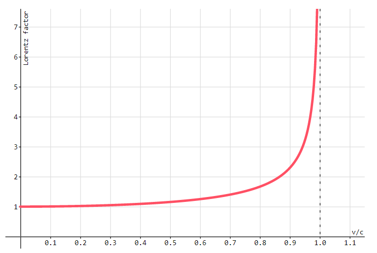

In 1907 Einstein published an important
thought experiment. Imagine a person in a box with no way to look outside. That person
couldn't distinguish between the acceleration of gravity or the
acceleration from a rocket. If both situations look and feel the same,
maybe they are the same. Maybe acceleration and gravity are
equivalent.
That person wouldn't be able to distinguish between the acceleration
of gravity or floating in space with no acceleration.
A free fall feels the same as not accelerating.
Classical Physics
On Earth, the rocket is at rest and the ball accelerates because
of gravity.
In space, the ball is at rest and the rocket accelerates because
of thrust.
Equivalent Acceleration and Gravity
Treating gravity and acceleration as equivalent means that both
situations are the same. The ball is at rest and the rocket is
accelerating. The 9.8 m/s² we feel is caused by the Earth
accelerating upward like a rocket!
Question: I'm sitting at my desk typing this
question right now. Am I at rest? When is a person at rest on
Earth?
answer
I am not at rest. I am accelerating at up at 9.8 m/s² because
my chair is pushing me upwards.
The
relativistic
point of view would be that the space around the Earth is
compressing, but the atoms of the Earth resists this
compression. This means that the surface of the Earth is
constantly accelerating upwards.
On Earth the only way to not accelerate up would be to fall.
Falling is when you are at rest.
General Relativity
The equivalence of acceleration and gravity drove Einstein towards a
new theory that would extend the scope of special relativity to
include gravity. In 1915 Einstein completed his theory of general
relativity. General relativity describes gravity as the curvature of
space and time, or spacetime.
Spacetime is
curved by
energy. Gravitation occurs when a body tries to move in a straight
line through curved spacetime.
Mass is a type of
potential energy, so it also curves spacetime.
In the simulation above, classical gravitational potential energy is represented as warping a 2-D surface into a 3rd dimension.
This isn't exactly the same math as general relativity, but it's a good analogy.
As bodies travel through curved space they follow the shortest distance between two points, a straight line.
The pull of gravity is what a straight line through curved space looks like.
Another example of a straight line through a curved space is the great circle routes around a sphere.
A full mathematical explanation of general relativity is beyond the scope of this page, but we will explore some of the predictions:
black holes: very dense bodies with gravity so strong that time stops
The theory of general relativity suggests a significant change to fundamental aspects of physics,
but there is overwhelming evidence in its favor.
General relativity is currently the best description of gravity, but it doesn't include any quantum mechanical ideas, like wave particle duality.
This isn't normally a problem because each theory operates at different scales.
Quantum mechanics explains small and isolated bodies. General relativity explains very massive bodies.
Some extreme situations do require both.
For example, black holes are both very small and very massive.
Neither quantum mechanics or relativity alone can explain how they work.
We hope that one day theoretical physicists will develop a "Grand Unified Theory" that combines both theories.
Gravitational Time Dilation
General relativity predicts that an accelerating reference frame experiences time dilation.
This effect is similar, but different from how relative velocity dilates time in special relativity.
A big difference from special relativity is that acceleration based time dilation is consistent for all observers.
This makes the acceleration based time dilation less complex.
General relativity says that massive bodies curve the spacetime around them.
This means an object in curved spacetime must accelerate to stay in the same position.
This acceleration produces time dilation.
You can't feel time dilation inside an accelerating frame of reference,
but observers outside the frame see everything inside as slower.
People age slower and move slower. They talk slower, with deeper voices.
Light originating inside a time dilated frame of reference has a lower frequency and a different color when observed from outside.
Black Holes
Extremely dense masses can push the gravitational time dilation equation to the point of breaking when you have to take the square root of a negative number. We can find where the equation breaks down by solving for the radius where the time dilation approaches zero.
This radius is called the Schwarzschild radius, or the event horizon.
Objects that achieve the high density needed to reach this point are called black holes. We can only speculate how black holes might behave, but the time dilation equation suggests very extreme outcomes.
As a body approaches the event horizon, the passage of time approaches zero. From an outsider's perspective, objects fall into black holes and never get out, frozen in time.
Black holes are a possible outcome at the end of the life of a very massive star.
Stars convert mass into energy through nuclear fusion. This energy balances the force of gravity and prevents stars from becoming black holes. When stars runs out of nuclear fuel, gravity will dominate and a black hole may form.
At the center of most galaxies there is a super massive black hole. Even our galaxy, the Milky Way, has one with a mass of 4 million Suns.
An accurate black hole model probably needs a unified theory of physics that combines general relativity with quantum field theory.
A grand unified theory of physics doesn't exist yet, but many physicists are actively looking for one.
Speed and velocity have no meaning without something to reference. If I said we are moving at 230 000
m/s,
your first question should be, "relative to what?". A plane? The Earth? The Sun?
We are moving at 230 000 m/s relative to our galaxy, the Milky Way.
Velocity must be relative to a reference frame. A
reference frame is a point of view from which events are observed.
A train is moving at 40 m/s relative to the train track.
The same train is stationary relative to a passenger on the train.
Each observer only sees motion in others. They see themselves at rest.
Move the mouse vertically to change observers in the animation above.
(note: special relativity isn't included yet in this animation.)
Question: A train moving at 20 m/s makes a sound with its steam whistle.
Sound moves through air at around 343 m/s relative to the air.
How fast would each observer measure the speed of sound?
Observer 1: A person at the train station.
Observer 2: A person at the back of the train.
answer
Observer 1:343 m/s.
The person on the ground measures the speed of sound as normal because they are at rest
relative to the air.
Observer 2:343 m/s + 20 m/s = 363 m/s
The person on the train is moving relative to the air so they will measure the speed of
sound as either higher or lower.
Thought Experiment: Imagine a train moving at half the speed of sound.
Whistles at the front and the back of the train blow at the same time.
Where on the train would a passenger hear the whistles simultaneously?
Where on the ground would an observer hear the whistles simultaneously?
results
A train passenger measures the sound from the front of the train as moving faster, and the sound
from the back as moving slower.
An observer on the ground measures both sound waves moving at the same speed, but the train is
moving to the right.
Both frames of reference agree that the sound waves meet towards the back of the train.
A Constant Speed of Light
Waves are a disruption that propagates through a medium. The speed of a wave is constant and determined by
the medium.
Sound's medium is atoms. Light's medium is electric and magnetic fields.
Light is different from other waves.
It moves faster than any known object, and it is able to propagate through the vacuum of space.
How can a wave exist in seemingly empty space?
Is space filled with a medium? What is the velocity of that medium relative to Earth?
Michelson and Morley split
a beam of light into two perpendicular paths. These separate beams reflected off mirrors to recombine again
at the splitter.
By looking at the interference pattern of the combined beams, they could tell with a high accuracy if either
path took less time.
They tested at different times of day and year to measure the effect of Earth's relative velocity on the
speed of light.
They always measured a constant speed of light in every direction. Earth's motion had no effect.
$$c = 3 \times 10^8 \, \mathrm{\tfrac{m}{s}} $$
All observers measure the speed of light as the same value even when moving at a relative velocity.
It seems like a constant speed of light for all observers leads to a paradox.
How can two observers moving relative to each other both see the speed of something as the same?
Thought Experiment:
Imagine a train moving at half the speed of light.
Imagine lights on the front and back of the train flash simultaneously for both observers.
Where would a passenger on the train see the lights flash at the same time?
Where would a ground based observer see the lights flash at the same time?
results
The train isn't moving from the passenger's frame of reference. This means they see the light
meet in the middle of the train.
A frame of reference on the ground sees the train moving to the right.
They see the light waves meet closer to the back of the train.
The frames of reference don't agree on the location and timing of events.
This happens when two frames of reference have a relative velocity between them.
These contradictory results indicate there is a problem with our model of physics.
Special Relativity
The Michelson-Morley experiment and a few other experiments indicated that there was a problem with our
understanding of relative velocity and light.
In 1905 Albert Einstein published his answer to the problem. He suggested special relativity as a
modification of the laws of physics to take into account a constant speed of light. Special relativity
suggests that space and time change for different observers in a way that keeps the speed of light constant.
Special relativity is based on two postulates:
1. The laws of physics are the same in all reference frames.
2. Light moves at the same speed for all observers.
Special relativity predicts that observers moving at a relative velocity to each other don't agree on the:
order of events (simultaneity)
passage of time (time dilation)
length of objects (length contraction)
mass of objects (mass–energy equivalence)
Because of the high speeds needed, special relativity is difficult to observe, but so far all tests support the theory to a high
degree of precision.
Here is a relative velocity simulation with time dilation and length contraction. Move the mouse vertically
to change observers.
Question: Are the predictions of special relativity 'real' or an 'illusion' that only
affects how an observer sees things?
solution
Effects like time dilation and length contraction have real consequences that all observers can
agree on. Time dilation can produce real differences in the ages of objects. (see twin paradox)
Question: Does special relativity mean time travel might be possible one day?
answer
YES! and no
You can already go forwards in time by just waiting, but you will get old.
If you have a velocity near the speed of light relative to the Earth, you will age slow as the Earth
ages fast. You could use this to see the far future, but right now we don't have a safe way to get a
person up to relativistic speeds.
It is probably impossible to go backwards in time, but the equations don't
completely rule it out.
Thought Experiment: Remember the train paradox?
The ground based frame of reference and the train based frame of reference disagreed on where the
flashes of light met.
Special relativity removes this inconsistency by not letting different frames agree on simultaneity.
It is only possible for the light flashes to be simultaneous for one of the observers.
If the flashes occur at the same time for the train observer, the ground observer will see the flashes
at different times.
Question: What relativistic effects can you observe in the the simulation.
answer
simultaneity and length contraction
The trees are narrow from the train's reference frame.
The train is shorter from the ground's reference frame.
Time dilation should also be present, but there isn't a way to see it in the simulation.
Lorentz factor
These equations predict how observers in two non-accelerating reference frames can disagree on space and
time if they have a relative velocity.
$$ \Delta t = \gamma \Delta t_0 \quad \quad \quad \quad L = \frac{L_0}{\gamma}$$
Before we can solve these equations, we need to calculate the Lorentz factor, written as Ɣ
(gamma).
The Lorentz factor is used in special relativity equations to scale how different reference frames measure
space and time.
The Lorentz factor is always greater than 1, but it grows towards infinity as the relative velocity
approaches the speed of light.
At a low relative velocity, the effects of special relativity aren't noticeable because the Lorentz factor is
one. As the relative speed approaches the speed of light, the Lorentz factor increases towards infinity.

Practice Problems
1. Calculate the Lorentz factor for two reference frames at rest relative to each other.
2. Calculate the Lorentz factor for two reference frames moving at half the speed of light relative to each
other.
3. Calculate the Lorentz factor for two reference frames moving at 0.99c relative to each other.
4. Calculate the Lorentz factor for two reference frames moving at the speed of light relative to each other.
Time Dilation
Time dilation is amazing because it disagrees with our natural intuition. Be careful when solving these
problems. Keep a clear idea of the observer and their velocity relative to the events.
To understand where the time dilation equation comes from we will explore a hypothetical
situation. Imagine light
clocks that work by firing light at a mirror and measuring the time for the light to return.
Each light clock's path is marked in blue.
$$ \Delta t = \gamma \Delta t_0$$
\(\Delta t\) = elapsed time for an observer in a frame of reference where the events occur in
different locations
\(\Delta t_0\) = elapsed time for an observer in a frame of reference where the events occur in
the same location, proper time
\( \gamma \) = Lorentz factor, gamma [no units]
Gamma must be greater than one. This means that \(\Delta t> \Delta t_0\).
Important
Muons are elementary particles similar to
electrons, but more massive.
Muons are produced in Earth's upper atmosphere by cosmic rays, but they have a half-life of 2.2
microseconds.
This means after 0.0000022 seconds half of a population of muons will decay into other particles.
Length Contraction
Length contraction only occurs in the direction of the relative velocity. Objects don't look smaller; they
look shorter.
An observer sees lengths contracted along the relative velocity.
$$ L = \frac{L_0}{\gamma}$$
\( L\) =
contracted length, as seen from a relative velocity
\( L_0\) =
rest length, as seen from its own rest frame
\( \gamma \) = Lorentz factor, gamma [no units]
The rest length is always longer. An object will look contracted from a moving reference frame.
Twin Paradox
Imagine there is a pair of twins names Apollo and Artemis.
On the day they are born Artemis is taken to a spaceship destined for Alpha Centauri 4.37 light-years away.
The spaceship travels at 0.8c.
Meanwhile, Apollo lives a normal life on Earth.
Mass and Energy
One of the implications of special relativity is that mass is a type of energy.
Mass is not the same as energy. Mass is a type of energy, just like how kinetic and gravitational potential
are types of energy.
We originally thought that mass produced gravity and had inertia.
We now know that all types of energy have these properties,
although it does take a large amount of energy to measure them.
If you add kinetic energy to an object it will have more gravity and more inertia.
This also means that objects with no mass, like light, have inertia and gravity.
Oddly enough most of the energy of an atom is not in the mass of the particles in the atom.
It comes from the binding energy of the strong nuclear force that keeps the quarks together.
$$ E = \gamma mc^2$$
\( E\) = Energy [J]
\( \gamma \) = Lorentz factor, gamma [no units]
\( m \) = mass [kg]
\(c\) = speed of light, 3 × 10⁸ [m/s]
At rest, the Lorentz factor is one.
This gives us Einstein's famous equation for mass-energy equivalence at rest.
$$E = mc^2$$
Light has energy, so it produces and is affected by gravity.
Of course, we don't normally need to include the energy of light in our calculates of gravity.
Inertia and gravity calculations are more accurate if the total energy is used.
For example, increasing the temperature of an body will cause it to produce slightly more gravity.
Lorentz Transformation Solver
Relative Velocity
v = c
v = 108 m/s
Lorentz Factor
=
MOVING RELATIVE TO SPACESHIP time =
s
energy = J
length = m
AT REST RELATIVE TO SPACESHIP proper time = s
rest energy = J
rest length = m
Frame of reference where an observer sees the spaceship in different locations.
Frame of reference where an observer sees the spaceship in the same location.